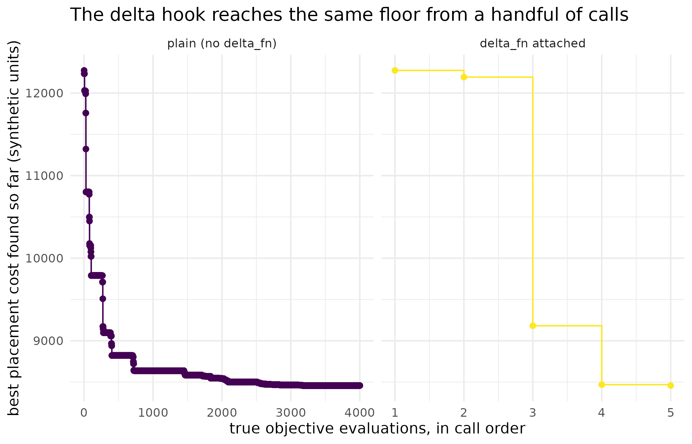

Combinatorial optimisation and delta evaluation
Source:vignettes/combinatorial.Rmd
combinatorial.RmdWhy
A logistics planner sequencing twenty tasks into twenty slots of rising cost wants the cheapest ordering, and a simulated anneal needs thousands of trial swaps to find it. Re-scoring the whole cost function from scratch after every one of those swaps is wasteful when a single swap only touches a sliver of the total – and on a genuinely expensive objective, it is slow enough to turn a search that would otherwise explore freely into one that stalls. This vignette asks: can the search be told, cheaply, what changes when only two items swap places, and still land on exactly the same answer it would have found the slow way?
What
space_permutation(n) declares a design space whose
points are the permutations of seq_len(n), reached through
the power path: build an optim_problem() whose objective
takes an integer permutation and returns a single number. The engine
behind it is perm_sa, a swap-move simulated annealer with
Metropolis acceptance and geometric cooling, needing nothing beyond base
R; method = "auto" routes every permutation problem to it.
The contract’s delta_fn hook – signature
delta_fn(perm, i, j) – lets a problem declare the change in
the objective from swapping positions i and j,
so the annealer can score a move without a full re-evaluation.
Do
Orderings as a design space
Not every decision variable is a real number. Scheduling, routing,
and assignment problems search over orderings, and
space_permutation(n) declares exactly that. It is a
general-purpose permutation engine, not a specialist: on large instances
of a structured problem such as the travelling salesman, a dedicated
solver with problem-specific moves will beat it.
A worked example
A synthetic assignment problem: twenty items of different weights must be placed into twenty positions of increasing cost, paying the item’s weight times the position’s cost. The best ordering puts the heaviest items in the cheapest positions:
n <- 20L
set.seed(101)
w <- as.numeric(sample.int(100L, n))
pos_cost <- as.numeric(seq_len(n))
placement_cost <- function(perm) {
sum(w[perm] * pos_cost)
}The delta hook
Simulated annealing proposes thousands of swaps, and re-evaluating
the whole objective after each one is wasteful when a swap only touches
a sliver of the sum. The contract’s delta_fn hook makes
that saving first-class. Its signature is
delta_fn(perm, i, j), and it must return the change in the
objective when the entries at positions i and
j of perm are swapped. For the placement
objective the change involves only the two moved items:
placement_delta <- function(perm, i, j) {
(w[perm[i]] - w[perm[j]]) * (pos_cost[j] - pos_cost[i])
}A wrong delta would corrupt the anneal silently, so optimix does not take the hook on trust. At startup the claimed delta of one random swap is verified against a full re-evaluation and a disagreement stops with an error. During the anneal the accumulated value is re-synchronised periodically with a fresh full evaluation, and the value reported in the result is always a fresh full evaluation at the best permutation found – never the accumulated shortcut.
Same trajectory, fewer evaluations
The two problems below are identical except for the hook, and they
share a seed. To see not just how many true evaluations each run spends
but where they land, placement_cost is wrapped in a small
counter that logs every call it actually receives, without changing what
it returns:
track_calls <- function(fn) {
log_env <- new.env(parent = emptyenv())
log_env$vals <- numeric(0)
wrapped <- function(x) {
v <- fn(x)
log_env$vals[length(log_env$vals) + 1L] <- v
v
}
list(fn = wrapped, log = log_env)
}The engine draws its random numbers in the same order whether or not
a delta_fn is present, and the delta here is exact, so both
runs walk the same trajectory and return the same permutation:
tr_plain <- track_calls(placement_cost)
prob_plain <- optim_problem(
fn = tr_plain$fn,
space = space_permutation(n),
max_evals = 4000,
seed = 7
)
tr_delta <- track_calls(placement_cost)
prob_delta <- optim_problem(
fn = tr_delta$fn,
space = space_permutation(n),
max_evals = 4000,
seed = 7,
delta_fn = placement_delta
)
plain <- optimix(prob_plain)
fast <- optimix(prob_delta)
identical(plain$par, fast$par)
#> [1] TRUE
c(plain = plain$value, fast = fast$value)
#> plain fast
#> 8458 8458In this seeded run the anneal lands on the exact optimum, which for this objective can be computed directly:
Counting true evaluations
counts[["function"]] counts true objective evaluations
only. Calls to the delta_fn never touch the objective, so
they are tallied separately in the diagnostics field
delta_evals rather than folded into the count:
A figure: the sparse footprint of true evaluations
The counts above say how many true evaluations each run spent; they
do not show what those evaluations achieved along the way. The tracker
attached above recorded every value placement_cost actually
returned, in call order, for both runs – 4001 calls for the plain run
and 5 for the delta-hook run. Plotting the running best (the cumulative
minimum) against call order shows the shape of the search each spent its
evaluations on:
| run | true_evaluations | final_best |
|---|---|---|
| plain | 4001 | 8458 |
| delta_fn attached | 5 | 8458 |
trace_df <- rbind(
data.frame(
run = "plain (no delta_fn)", call_index = seq_along(tr_plain$log$vals),
best_so_far = cummin(tr_plain$log$vals)
),
data.frame(
run = "delta_fn attached", call_index = seq_along(tr_delta$log$vals),
best_so_far = cummin(tr_delta$log$vals)
)
)
trace_df$run <- factor(
trace_df$run, levels = c("plain (no delta_fn)", "delta_fn attached")
)
ggplot2::ggplot(
trace_df, ggplot2::aes(x = call_index, y = best_so_far, colour = run)
) +
ggplot2::geom_step() +
ggplot2::geom_point(size = 1.6) +
ggplot2::facet_wrap(~run, scales = "free_x") +
ggplot2::scale_colour_viridis_d(name = "run", guide = "none") +
ggplot2::labs(
x = "true objective evaluations, in call order",
y = "best placement cost found so far (synthetic units)",
title = "The delta hook reaches the same floor from a handful of calls"
) +
ggplot2::theme_minimal()
Best placement cost found so far, in call order, for the plain run against the delta_fn run. The plain run’s true evaluations trace a dense staircase over four thousand calls; the delta_fn run reaches the same floor from a handful of calls, because most of its moves are scored from the delta alone and never touch the objective. Each panel keeps its own x-axis, since the two runs spend true evaluations at entirely different rates.
The plain run pays one full evaluation per scored move. With the hook, the objective is touched only for the initial score, the startup contract check, the periodic re-syncs, and the final fresh evaluation of the returned value – a few true evaluations in place of four thousand, for the same answer. For objectives where a full evaluation is genuinely expensive (a delta over a large assignment or schedule), this is the difference between an anneal that explores and one that stalls.
Read
Both runs return the identical permutation (TRUE), at a value of
8458, which is exactly the value a direct calculation confirms is
optimal for this instance: 8458. The plain run spent 4001 true
evaluations against a max_evals of 4000; the delta-hook run
spent 5, with 4000 further calls to delta_fn that never
touched the objective at all. The trajectory table and figure make that
gap concrete rather than abstract: the plain run’s staircase runs the
whole width of its panel, improving in small steps across thousands of
calls, while the delta-hook panel needs only 5 points to land on the
same floor of 8458. Neither panel’s y-axis is a different scale – both
bottom out at the same value – which is the visual confirmation that
fewer evaluations did not mean a worse answer here.
Limits
This instance is small enough (twenty items) that the plain run’s
four thousand evaluations cost nothing worth economising in absolute
terms; the delta hook earns its keep on objectives where a single full
evaluation is itself expensive, which this synthetic placement cost is
not. The delta here is also exact, verified once at startup and
re-synchronised periodically during the anneal; a delta_fn
that drifts from the true objective between re-syncs, rather than
disagreeing outright, is not a failure mode this vignette exercises.
perm_sa is a general-purpose annealer, and this vignette
does not compare it against a specialist solver for a structured
combinatorial problem such as the travelling salesman, where a dedicated
method is expected to win.
What to read next
Getting started with optimix covers the two front doors and
the result object this vignette builds on. The auto selector and
racing explains why method = "auto" never races a
permutation space – it routes directly to perm_sa instead.
Mapping optima and the orchestra manifest covers the
continuous-space counterpart to “one best point”: the full set of
equally good optima, which is not defined over an ordering.
Reproduce
Seed 101 for the synthetic weight vector; seed
7 for both anneal runs.
sessionInfo()
#> R version 4.6.1 (2026-06-24)
#> Platform: x86_64-pc-linux-gnu
#> Running under: Ubuntu 24.04.5 LTS
#>
#> Matrix products: default
#> BLAS: /usr/lib/x86_64-linux-gnu/openblas-pthread/libblas.so.3
#> LAPACK: /usr/lib/x86_64-linux-gnu/openblas-pthread/libopenblasp-r0.3.26.so; LAPACK version 3.12.0
#>
#> locale:
#> [1] LC_CTYPE=C.UTF-8 LC_NUMERIC=C LC_TIME=C.UTF-8
#> [4] LC_COLLATE=C.UTF-8 LC_MONETARY=C.UTF-8 LC_MESSAGES=C.UTF-8
#> [7] LC_PAPER=C.UTF-8 LC_NAME=C LC_ADDRESS=C
#> [10] LC_TELEPHONE=C LC_MEASUREMENT=C.UTF-8 LC_IDENTIFICATION=C
#>
#> time zone: UTC
#> tzcode source: system (glibc)
#>
#> attached base packages:
#> [1] stats graphics grDevices utils datasets methods base
#>
#> other attached packages:
#> [1] optimix_0.2.0.9000
#>
#> loaded via a namespace (and not attached):
#> [1] gtable_0.3.6 jsonlite_2.0.0 compiler_4.6.1 cmaes_1.0-12
#> [5] parallel_4.6.1 dfoptim_2023.1.0 jquerylib_0.1.4 systemfonts_1.3.2
#> [9] scales_1.4.0 textshaping_1.0.5 yaml_2.3.12 fastmap_1.2.0
#> [13] ggplot2_4.0.3 R6_2.6.1 labeling_0.4.3 proxymix_0.17.0
#> [17] DEoptim_2.2-8 knitr_1.52 nloptr_2.2.1 desc_1.4.3
#> [21] bslib_0.12.0 RColorBrewer_1.1-3 rlang_1.3.0 cachem_1.1.0
#> [25] xfun_0.62 fs_2.1.0 DiceKriging_1.6.1 sass_0.4.10
#> [29] S7_0.2.2 otel_0.2.0 viridisLite_0.4.3 cli_3.6.6
#> [33] withr_3.0.3 pkgdown_2.2.1 digest_0.6.39 grid_4.6.1
#> [37] lifecycle_1.0.5 DEoptimR_1.2-2 vctrs_0.7.3 GenSA_1.1.15
#> [41] evaluate_1.0.5 glue_1.8.1 farver_2.1.2 ragg_1.5.2
#> [45] rmarkdown_2.32 tools_4.6.1 htmltools_0.5.9